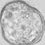
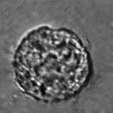

V3CELL SECTIONAL ATLAS
明场里的
类器官
一张图像，辨识表型。
一段序列，追踪发育命运。
7,749静态 ROI
9类表型
3种命运
01 / 03从明场到截面
02 STATIC PHENOTYPES
两条路径，
同一表型空间
显微镜记录真实类器官，模型按亚型生成虚拟样本。沿着两条路径，看结肠、胃与肺的形态如何在表型空间汇合。

图 2 · 真实与虚拟 ROI 查看图 3 的实测 UMAP02 / 03观测与生成
03 DEVELOPMENTAL FATES
一个起点，
三种可能的命运
独立的羊膜囊类器官研究以六帧早期形态为输入，在命运条件下推演后续十九帧。分支展示三种可能，每个真实样本只经历一种结局。

图 5A · 虚拟轨迹末帧 进入时序工作台03 / 03命运条件推演